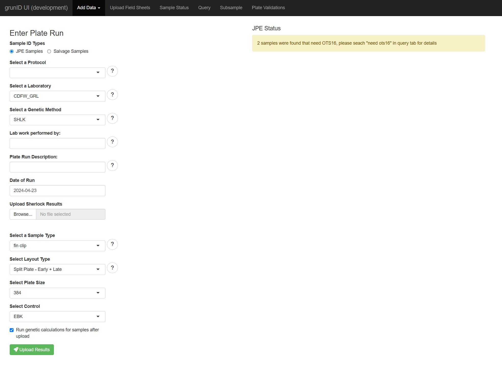
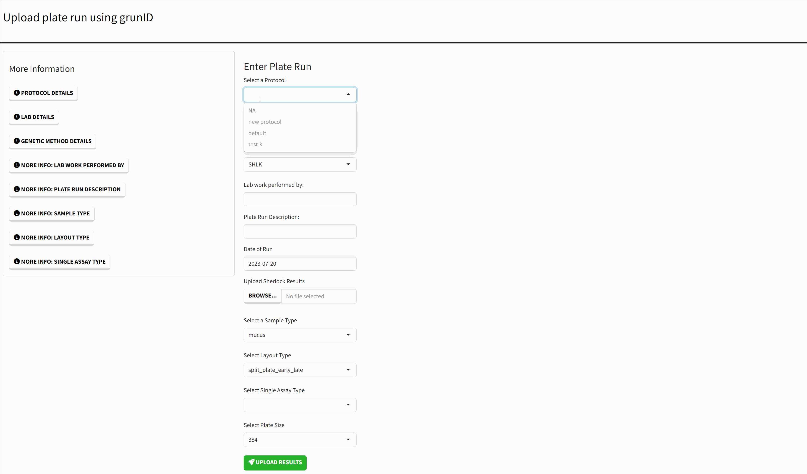

GrunID Shiny App
grunid-app.Rmd
library(grunID)Introduction
Starting from version 0.5 of grunID, an R Shiny app is
included in the package. To launch the app, simply call the function
grunID::run_app(). Like
grunID::gr_db_connect(), the app will search for a
configuration file to obtain the necessary parameters for connecting to
the database. In this guide, we will explore the various features of the
app and provide instructions on how to use it.
Note: The app is currently in development, and changes may be made. As a result, this documentation may not always be up-to-date. Please report any bugs to erodriguez@flowwest.com.
Usage
To launch the app, run grunID::run_app(). You can
optionally pass in a path to a config file, but by default, the app will
search for a config file within the working directory.
grunID::run_app()
The options available for each element of the form are the latest data from the database. Additionally, each form value has a corresponding ‘More Information’ window that either lists the available options in more detail or provides a more detailed explanation of the input.
